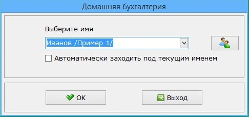

2 Анализ программы «Домашняя бухгалтерия» на предмет юзабилити.
«Домашняя бухгалтерия» предназначена для ведения учета Ваших финансов и является комплексным решением для учета финансов как на персональном, так и на карманном компьютере, со встроенной системой синхронизации данных между компьютерами. С помощью «Домашней бухгалтерии» Вы можете вести учет не только личных финансов, но и финансов всей своей семьи или использовать ее для ведения бухгалтерии небольшой компании. «Домашняя бухгалтерия» проста в использовании и не требует от пользователя знаний бухгалтерского учета. Несмотря на свою простоту в использовании, «Домашняя бухгалтерия» это мощный, функциональный и гибкий инструмент для учета финансов. Интерфейс программы русский и интуитивно понятный.
2.1 При запуске программы отображается окно выбора пользователей, откуда можно быстро попасть в меню создания новых пользователей, а также настроить автоматический вход.
2.2 Основное меню программы содержит, разделённые на категории, основные элементы программы.
2.3 Главные разделы программы интуитивно понятны и позволяют легко настраивать интерфейс программы, в соответствие с пожеланиями пользователя.

2.4 Ряд инструментов программы помогает облегчить анализ информации позволяя организовывать инфографику, посредством диаграмм.
2.5 Встроенные инструмента позволяют не отвлекать на поиск сторонних программ.
Итоги
Проанализировав интерфейс программы, можно сделать вывод, что он соответствует современным требованиям юзабильности. Дизайн программы соответствует ожиданиям от коммерческого проекта с многолетним стажем.